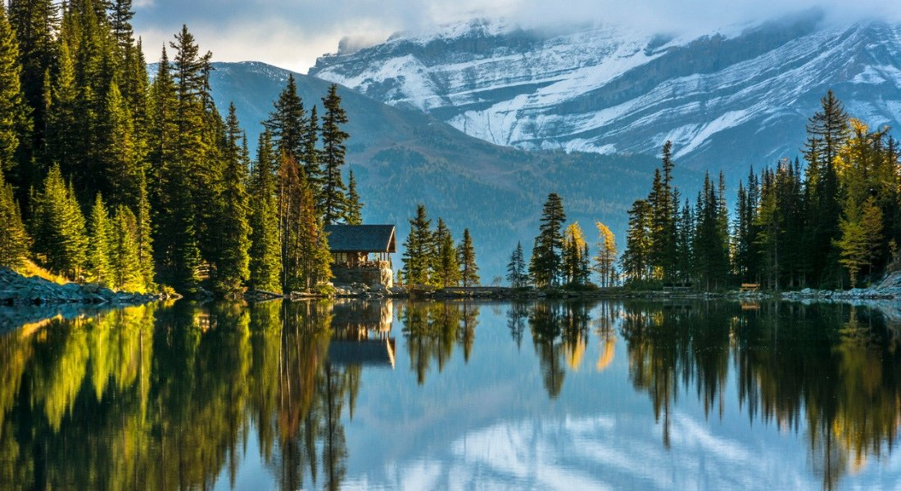
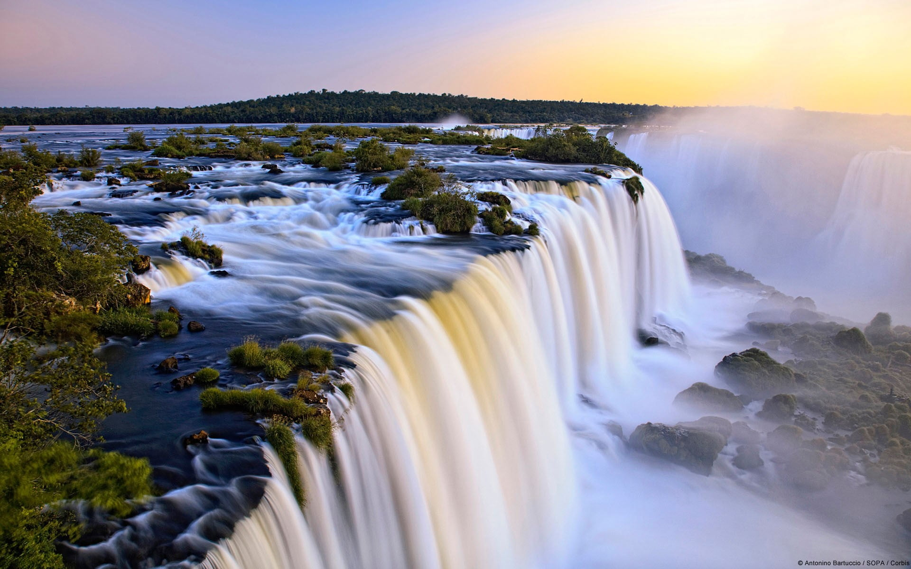
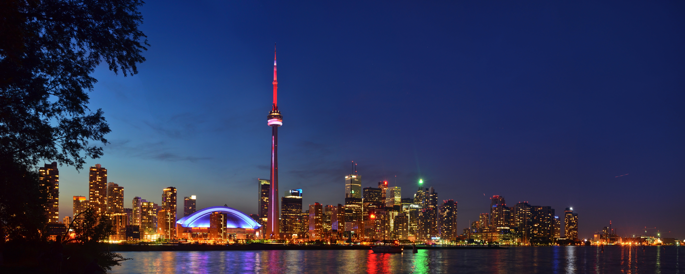

Niagara Falls
En 1678, l’explorateur et prêtre franciscain Père Louis Hennepin est le premier européen à les découvrir. Au fur et à mesure que les colons arrivent, les tribus habitant la région se dispersent. Rapidement, des forts sont construits à l’embouchure de la rivière Niagara, contrôlant l’accès aux Grands Lacs. Parmi eux, le Old Fort Niagara, construit au 18ème siècle et restauré au 20ème siècle.
Les chutes du Niagara sont une merveille de la nature, situées à la frontière entre les USA et le Canada. Elles sont constituées de 3 chutes, dont la plus haute atteint 57 mètres. Plus que leur hauteur, c’est surtout leur largeur, leur puissance et leur débit d’eau (le plus important d’Amérique du Nord) qui rend les chutes si impressionnantes. Il est très facile de les observer depuis la rive, dont l’accès est gratuit.
En hiver, les Niagara Falls offrent un spectacle aussi magnifique que surprenant. La brume de l’eau se mêle aux parties gelées des chutes et aux diverses formations de glace le long des berges et sur la rivière.
Autre immanquable, le spectacle des chutes de nuit, puisque celles-ci sont éclairées par des projecteurs colorés. L’été, vous aurez également l’occasion d’admirer les feux d’artifices tous les vendredi et dimanche.